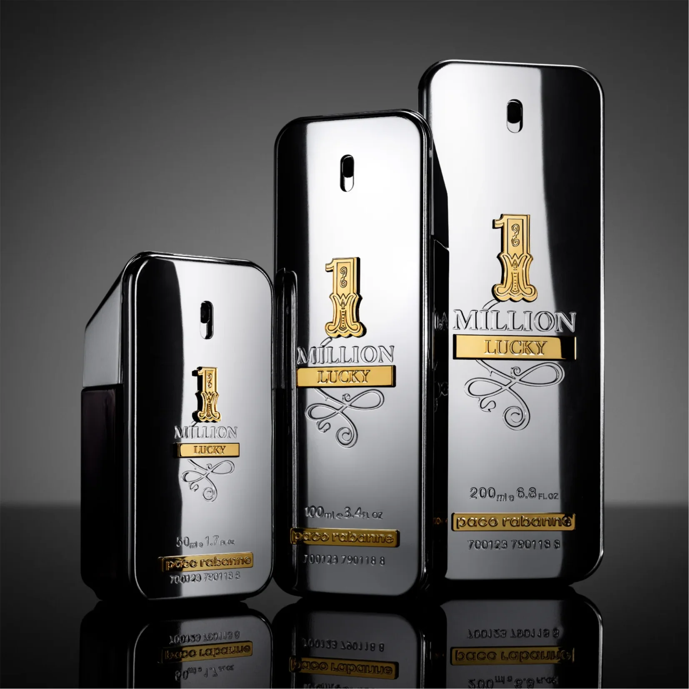
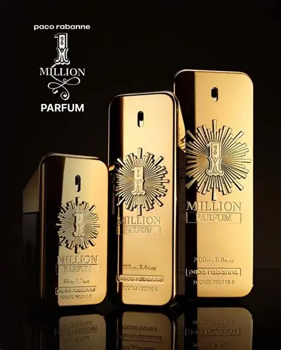

Composição e notas
A fragrância combina notas cítricas, especiadas e amadeiradas. Entre elas estão toranja, hortelã, mandarina sanguínea, rosa, canela, couro, âmbar e patchouli.

O One Million é comercializado em diferentes volumes, como 50 ml, 100 ml e 200 ml. Seu frasco possui formato inspirado em uma barra de ouro e acabamento metálico.
A fragrância combina notas cítricas, especiadas e amadeiradas. Entre elas estão toranja, hortelã, mandarina sanguínea, rosa, canela, couro, âmbar e patchouli.

O frasco dourado representa luxo e se tornou uma característica marcante do perfume. O valor pode variar conforme tamanho, edição e local de venda.